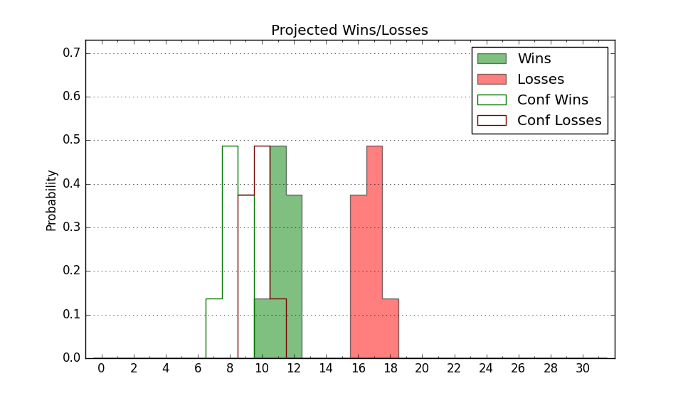

| Home | Game Probabilities | Conferences | Preseason Predictions | Odds Charts | NCAA Tournament |
| City: | Jacksonville, Florida | |
| Conference: | Atlantic Sun (8th)
| |
| Record: | 7-9 (Conf) 10-16 (Overall) | |
| Ratings: | Comp.: -7.0 (245th) Net: -7.1 (245th) Off: 105.4 (129th) Def: 112.4 (339th) SoR: 0.0 (145th) |
| Remaining | ||||||
|---|---|---|---|---|---|---|
| Date | Opponent | Win Prob | Pred. | |||
| 2/22 | Eastern Kentucky (200) | 53.4% | W 79-78 | |||
| 2/24 | Bellarmine (267) | 69.7% | W 72-67 | |||
| Previous | Game Score | |||||
| Date | Opponent | Win Prob | Result | Off | Def | Net |
| 11/7 | @Gonzaga (10) | 2.1% | L 63-104 | -19.6 | 5.7 | -13.9 |
| 11/11 | @Washington (106) | 12.4% | L 67-75 | -1.0 | 11.5 | 10.4 |
| 11/19 | South Carolina St. (345) | 85.4% | W 72-66 | -20.7 | 15.9 | -4.8 |
| 11/21 | @Duquesne (120) | 14.0% | L 82-83 | 20.7 | -4.2 | 16.5 |
| 11/23 | @Kentucky (36) | 4.4% | L 56-96 | -19.1 | -5.2 | -24.3 |
| 12/3 | @High Point (295) | 45.9% | L 88-93 | -1.0 | -13.8 | -14.8 |
| 12/6 | @Houston (1) | 0.8% | L 42-76 | -17.5 | 6.0 | -11.5 |
| 12/10 | Bethune Cookman (355) | 88.9% | W 88-48 | -4.4 | 33.1 | 28.7 |
| 12/17 | @Pittsburgh (62) | 6.6% | L 56-82 | -14.8 | 2.1 | -12.7 |
| 12/22 | @Bethune Cookman (355) | 70.1% | W 87-85 | 2.5 | -3.0 | -0.5 |
| 12/31 | Austin Peay (319) | 79.3% | W 90-85 | 1.2 | -16.4 | -15.2 |
| 1/2 | @Stetson (173) | 21.3% | L 62-68 | -15.3 | 18.4 | 3.0 |
| 1/5 | Kennesaw St. (154) | 44.8% | W 89-86 | 21.0 | -14.6 | 6.4 |
| 1/7 | @Florida Gulf Coast (164) | 20.2% | L 57-82 | -24.0 | 3.4 | -20.7 |
| 1/12 | @Jacksonville St. (274) | 41.2% | L 63-72 | -7.5 | -0.7 | -8.2 |
| 1/14 | @Kennesaw St. (154) | 19.2% | L 72-86 | 6.1 | -8.2 | -2.1 |
| 1/19 | Queens (217) | 59.2% | W 95-90 | 18.5 | -18.3 | 0.2 |
| 1/21 | Liberty (56) | 18.1% | L 62-73 | -5.7 | 5.8 | 0.0 |
| 1/26 | @Central Arkansas (332) | 56.2% | L 85-88 | -6.7 | -0.4 | -7.1 |
| 1/28 | @North Alabama (237) | 33.3% | L 78-91 | 8.9 | -25.6 | -16.7 |
| 2/2 | @Jacksonville (230) | 32.4% | W 76-63 | 28.0 | 15.8 | 43.8 |
| 2/4 | Jacksonville (230) | 62.0% | W 65-58 | 3.8 | 2.8 | 6.6 |
| 2/9 | Florida Gulf Coast (164) | 46.3% | L 66-68 | -1.8 | 0.2 | -1.6 |
| 2/11 | Stetson (173) | 48.0% | W 92-81 | 21.7 | -0.3 | 21.5 |
| 2/16 | @Lipscomb (192) | 24.0% | W 114-111 | 23.5 | -7.2 | 16.3 |
| 2/18 | @Austin Peay (319) | 52.9% | L 71-73 | 5.6 | -9.5 | -3.8 |
| Stats & Trends | |||||
|---|---|---|---|---|---|
| Current | Day | Week | Month | Season | |
| Composite | -7.0 | -0.0 | +0.8 | +2.5 | -3.2 |
| Comp Rank | 245 | -- | +8 | +33 | -45 |
| Net Efficiency | -7.1 | -0.0 | +0.9 | +2.9 | -- |
| Net Rank | 245 | -- | +10 | +38 | -- |
| Off Efficiency | 105.4 | -0.0 | +1.5 | +4.9 | -- |
| Off Rank | 129 | +1 | +19 | +71 | -- |
| Def Efficiency | 112.4 | -0.0 | -0.6 | -2.0 | -- |
| Def Rank | 339 | -1 | -7 | -16 | -- |
| SoS Rank | 151 | -1 | +7 | -40 | -- |
| Exp. Wins | 11.2 | -0.0 | +0.4 | +1.2 | -1.7 |
| Exp. Conf Wins | 8.2 | -0.0 | +0.4 | +1.2 | -1.3 |
| Conf Champ Prob | 0.0 | -- | -- | -0.0 | -8.9 |

| Advanced Stats | ||
|---|---|---|
| Stat | Value | Rank |
| Off Eff FG % | 0.520 | 129 |
| Off Ast Ratio | 0.128 | 282 |
| Off ORB% | 0.237 | 269 |
| Off TO Rate | 0.156 | 180 |
| Off FT Ratio | 0.294 | 249 |
| Def Eff FG % | 0.522 | 242 |
| Def Ast Ratio | 0.168 | 335 |
| Def ORB% | 0.324 | 339 |
| Def TO Rate | 0.107 | 362 |
| Def FT Ratio | 0.256 | 47 |